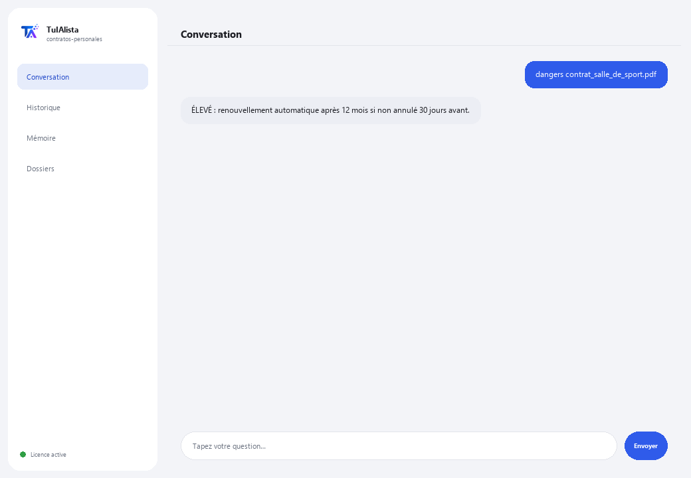

Agent Contrats personnels
Vous explique en mots simples tout contrat que vous êtes sur le point de signer et vous avertit des clauses qui pourraient vous nuire.
Que résout-il et de quoi avez-vous besoin ?
Un avocat facture entre 100 et 300 $ pour examiner un contrat. Cet agent le fait instantanément, autant de fois que vous voulez, en toute confidentialité, pour les contrats du quotidien : location, téléphonie, salle de sport, crédit, un emploi.
- Vous avez besoin de : votre clé de licence (TIA-XXXX-XXXX-XXXX-XXXX) et du contrat (ou du dossier contenant vos contrats). Ni Python ni connaissances techniques.
- Premier résultat en moins de 5 minutes : vous installez, activez, chargez votre contrat avec charger et lancez dangers pour voir quelles clauses examiner.
- Votre contrat ne quitte jamais votre ordinateur — l'analyse s'exécute localement.
soporte@tuialista.com ou visitez tuialista.com/soporte — nous répondons généralement le jour même.1 Ce que fait cet agent
Vous lui indiquez le contrat (ou le dossier contenant vos contrats) et il :
- L'explique en langage quotidien : ce que vous signez, à quoi vous vous engagez, combien vous payez et pour combien de temps.
- Détecte les clauses dangereuses pour le consommateur (renouvellement automatique, engagement forcé, pénalités, hausses de prix unilatérales, frais cachés, prélèvement automatique, cession de données, taux d'intérêt élevés...).
- Liste vos obligations concrètes (ce que vous devez faire, quand et combien).
- Extrait tous les coûts et estime le coût total si vous respectez le contrat en entier.
- Explique comment et quand vous pouvez annuler et ce que ça vous coûte.
- Suggère des questions à poser avant de signer.
Résultat : vous signez en comprenant vraiment ce que vous acceptez.
2 Installation (2 minutes)
Pour Windows. Pas besoin d'internet permanent ni de rien envoyer sur le cloud.
Téléchargez l'installateur depuis tuialista.com/descargar (agent Contrats personnels) et ouvrez-le. Il crée un raccourci sur votre bureau avec le logo — pas besoin de Python ni de terminal.
Double-cliquez sur la nouvelle icône. Collez votre clé de licence (reçue par e-mail à l'achat) et cliquez sur Activer. Une coche verte apparaît quand elle est valide.
Sélectionnez le dossier contenant vos contrats et cliquez sur Commencer à utiliser l'agent. La prochaine fois, il démarre directement — il se souvient de votre clé et de votre dossier.
3 Comment l'utiliser
L'agent ouvre une fenêtre de discussion, comme une app de messagerie — pas un écran noir de programmeur. Vous chargez d'abord le contrat, puis écrivez chaque demande dans ce même champ de texte :

> charger <fichier>Charge le contrat. Ensuite vous pouvez utiliser les autres commandes avec ce contrat. Ex. : charger contrat_salle_de_sport.pdf.
> explique <fichier>L'explication claire : ce qu'est le contrat, à quoi vous vous engagez, ce qu'on peut vous facturer en plus, quand il se termine et comment en sortir.
> dangers <fichier>Clauses qui peuvent vous nuire, classées par niveau (ÉLEVÉ / MOYEN), avec le passage du contrat où elles apparaissent. C'est la seule action qui fonctionne à 100 % en local, sans IA.
> obligations <fichier>Liste concrète : quoi, quand et combien (ex. : “Payer 699 $ par mois les 5 premiers jours de chaque mois pendant 12 mois”).
> coûts <fichier>Mensualité, inscription, dépôts, pénalités, intérêts, TVA... et le coût total estimé si vous respectez le contrat en entier.
> annuler <fichier>Si vous pouvez annuler quand vous voulez ou s'il y a un délai minimum, comment annuler, avec combien de préavis et ce qu'on vous facture.
> questions <fichier>Questions concrètes à poser avant de signer.
> question libre ?Avec un contrat chargé, posez ce que vous voulez, ex. : peuvent-ils augmenter ma mensualité pendant le contrat ?
> quitterTermine la session (fonctionne aussi avec exit).
4 Exemples d'usage courant
Avant de signer un abonnement de salle de sport
charger contrat_salle_de_sport.pdf → explique contrat_salle_de_sport.pdf → dangers contrat_salle_de_sport.pdf
Comprendre un crédit
coûts contrat_credit.pdf → annuler contrat_credit.pdf
Vous préparer avec des questions
questions contrat_location.pdf
Une question ponctuelle
que se passe-t-il si je veux partir avant les 18 mois ?
5 Questions fréquentes
Mon contrat est-il envoyé sur internet ?
Quels formats accepte-t-il ?
Est-ce que cela remplace un avocat ?
Comment détecte-t-il les clauses dangereuses ?
Le coût total calculé est-il exact ?
Conserve-t-il mes contrats ?
Dans quelle langue répond-il ?
Lit-il un PDF scanné ?
Puis-je analyser plusieurs contrats ?
Modifie-t-il mon contrat ?
6 Résolution de problèmes
Un .pdf ou .docx ne se lit pas
Indique qu'il n'a pas pu lire le contrat
Il ne détecte pas une clause que je sais présente
Affiche “Licence invalide” ou demande de se reconnecter
“Aucun fournisseur d'IA configuré”
Aucune de ces solutions n'a résolu votre problème ? Écrivez-nous directement — nous serons ravis de l'examiner avec vous.
soporte@tuialista.com ou visitez tuialista.com/soporte — nous répondons généralement le jour même.7 Confidentialité
Votre contrat ne quitte jamais votre ordinateur.
- L'agent lit et analyse le contrat localement, sur votre propre appareil. Il ne l'envoie à aucun serveur ni ne le partage avec personne.
- La détection des clauses dangereuses (dangers) se produit à 100 % sur votre machine.
- La seule chose qui transite par internet est : (1) une vérification que votre licence est active — qui n'inclut pas votre contrat —, et (2) pour les explications et questions, un fragment du contrat (jusqu'à environ 7 000 caractères) est envoyé au moteur d'IA pour rédiger la réponse.